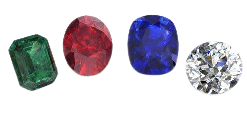

Contents
Gemstones are mostly mineral-based and inorganic, but some can have an organic composition. They vary in all sorts of colours and clarity, value and price, as well as meaning and healing properties. A gem can be a crystal, but not all crystals are gems, more explanations here! Gemstones are found found all over the world, we can even find rare gems in Ontario. Gems are cut, shaped, and beautified usually for jewelry.
Traditionally, gems considered as precious have always been diamonds, saphire, emerald, and ruby.
Semi precious gemstones are any other gemstone.
Click the diamond below to watch a video on precious vs. semi-precious stones!
More information here!
Watch this video about how to tell the difference between gemstones and crystals.
Return to Top